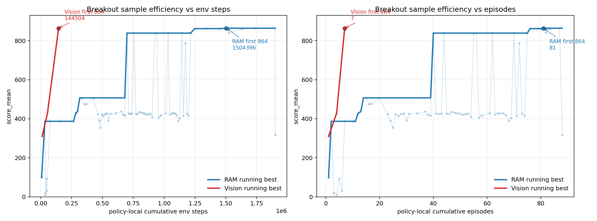
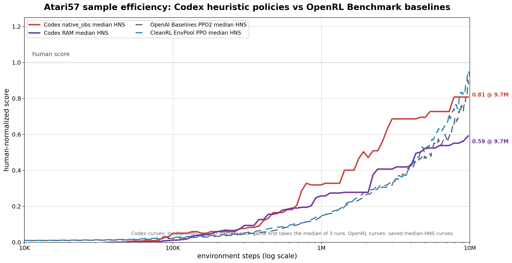

heuristic system
Jiayi Weng
这篇文章想讲的不是“让 Codex 写 Atari 策略”本身，而是它后面露出来的一个更一般的问题：当 coding agent 能持续写代码、跑实验、看失败、再改代码时，过去那些因为维护成本太高而不值得认真做的启发式系统，会不会重新变成一种可用的软件形态？
我会先给出一个定义，然后用 EnvPool 里的 Atari / MuJoCo 实验说明这个定义不是凭空来的。核心证据是：在不训练神经网络、不做强化学习更新的情况下，Codex 5.4 xhigh 可以通过写代码、跑实验、看日志、改策略，把 Pong 推到 21，Breakout 推到 864，Ant-v5 推到 6146，HalfCheetah-v5 推到 12041；在一次无人值守的 Atari57 批量实验里，它还能把中位数 HNS 推到接近 OpenRL Benchmark 里 PPO 基线的区间。
我不想把它写成“启发式打败神经网络”的故事。这个说法太粗，也不准确。真正变了的是维护成本：过去启发式系统难维护，所以人们自然倾向于训练模型；现在 coding agent 能持续维护代码、实验账本、回放、失败分析和回归测试，这个取舍变了。
1. 问题从哪里来
这个想法一开始不是为了写文章，也不是为了证明什么宏大观点。
我当时想给 EnvPool 做环境正确性验证，需要一些比随机策略强很多、但又不需要训练的策略。随机策略太弱，很多环境一整局都碰不到关键奖励；失败时只能看到超时或者 0 分，很难判断是环境错了、封装错了，还是策略根本没走到有信息的状态。给每个环境都训练一个神经网络又太重，训练脚本、依赖、版本、检查点都会变成测试系统自己的负担。
所以最自然的想法是：能不能写一些简单 heuristic，专门帮我把环境跑到有信息的状态？
一开始我直接问 Codex：“写一个能解决 Breakout 的策略。”效果一般。低分没有解释力：它不知道是动作语义错了、状态检测错了、评测设置错了，还是策略结构本身不行。后来我把任务改成了另一种形式：不要只交一个 policy.py，而是维护完整闭环。
这个闭环最早是在 Pong 和 Breakout 上磨出来的。它先探测动作空间和观测形状，再确认动作含义；先写 RGB / RAM 检测器，再写策略；每次完整回合后写 trials.jsonl 和 summary.csv；刷新最高分以后生成视频、画曲线、记录复现命令；最后还要做一轮简化，把搜索过程中长出来的临时脚本和无效分支删掉。
这一步很关键。真正产物不再只是策略文件，而是一个能继续被修改的实验系统。
2. 定义
我把这类东西叫做 heuristic system。
先不搞得太像定义题。一个 heuristic system 不是“我写了一条规则”，而是“我写了一套规则，而且这套规则能被继续实验、记录、回放、修改”。
比如 Breakout 里，“挡板追球”只是一条 heuristic。它不够。真正有价值的是后面那套东西：怎么检测球和挡板，怎么确认动作含义，怎么知道球路卡住了，怎么复现某个 387 分或 864 分，怎么记录这次改动为什么有效，下一轮要从哪里继续。到这里，它才开始像一个系统。
我现在会把它拆成六个部分：
HS = (O, S, R, E, L, U)
O 是观测输入。它可以是图像、RAM、状态向量、日志、请求特征、代码 diff、监控指标或用户反馈。系统首先要知道自己到底在看什么。
S 是状态表示。原始输入通常不能直接写规则，所以系统需要把它变成稳定一点的状态：球和挡板的位置、机器人姿态、服务负载、PR 风险区域、请求类型、失败模式。
R 是规则集合。它可以是条件分支、阈值、状态机、宏动作、控制器、路由策略、回退策略、测试选择策略。
E 是评估器。它回答“这次改动有没有变好”：回报、测试结果、延迟、错误率、成本、人工标注、线上指标、回放评分。没有评估器，规则只能靠感觉调。
L 是账本。它记录每一次尝试：规则版本、配置、实验结果、失败原因、回放材料、回滚点。没有账本，agent 跑二十轮以后就会开始重复踩坑。
U 是更新过程。它根据 E 和 L 修改 S、R，有时也修改 E 和 L。这里的 U 就是 coding agent 最关键的位置：它不是一次性写完规则，而是负责让规则系统继续演化。
所以一个 heuristic system 可以写成：
观测 -> 状态表示 -> 规则决策 -> 行动 -> 评估 -> 记录 -> 修改系统
没有最后两步，它只是 heuristic。加上记录和更新，它才是 system。
3. 为什么以前这条路走不远
人当然可以写 heuristic。一条规则甚至可以写得非常漂亮。
球在左边就往左移动。
机器人快摔倒了就先稳住身体。
PR 改了鉴权路径就多跑测试。
延迟高就切一部分流量。
问题是系统不会停在这一层。很快它会变成：
球在左边，但速度很快，而且动作有一帧延迟，直接追会过冲。
机器人快摔倒了，但当前接触点不可信，恢复动作不能太激进。
PR 改了鉴权路径，但只是重命名；真正危险的是共享工具函数语义变了。
延迟高，但备用路径错误率也高，只能切一小部分，还要防止重试风暴。
复杂性来自规则之间的相互作用、反馈滞后、例外处理、回归测试和历史包袱。过去 heuristic 失败的原因通常不是“规则没用”，而是“规则系统没人维护得动”。
coding agent 改变的是这个维护动作本身。它不一定能想出最聪明的规则，但它可以持续做这些很磨人的事情：
- 从失败日志里找模式。
- 写探针确认输入语义。
- 跑一批候选规则。
- 记录每个候选的配置和结果。
- 看视频或 replay 定位失败点。
- 修改规则，同时不破坏旧 case。
- 删除已经没用的分支。
- 把规则迁移到新的输入格式。
- 在指标变差时回滚。
- 把经验固化成测试。
小规模 heuristic 不需要 agent。一个长期演化的、带实验账本和回归测试的 heuristic system，在 coding agent 出现后才变得现实。
4. 实验证据：Atari 和 MuJoCo
下面的实验都在 EnvPool 里跑。基本约束是：
- 不训练神经网络。
- 不做强化学习参数更新。
- 策略必须是可执行代码。
- 每次实验要记录环境步、分数、配置和备注。
- 最终留下可复现命令、曲线、视频或策略脚本。
模型配置主要是 Codex 5.4、xhigh。我没有做模型大小或推理强度的系统消融，所以这里讨论的是这个配置下观察到的现象。
单点实验里，我会看中间结果，再让 Codex 继续沿某个方向迭代。Atari57 批量实验不一样：我用 Codex CLI 一次性启动很多 gpt-5.4 xhigh agent，每个 agent 拿到同一个模板和不同的 ENV_ID / OBS_MODE / REPEAT_INDEX，然后全程不管，等它们自己停下再收结果。为了减少不可见上下文，我没有用 Codex App，也没有让它读长期记忆。
代表性结果如下：
| 任务 | 设置 | 结果 | 说明 |
|---|---|---|---|
| Pong-v5 | Atari | 21 |
达到最高分。 |
| Breakout-v5 | RAM | 864 / 864 / 864 |
三局验证都到理论最高分。 |
| Breakout-v5 | RGB 图像 | 864 |
先在 RAM 找到几何控制，再迁移成纯图像检测。 |
| Ant-v5 | MuJoCo state | max 6146.2，5 局均值 6005.5 |
从节律步态演化到残差模型预测规划。 |
| HalfCheetah-v5 | MuJoCo state | 12041 |
用可解释步态/姿态规则和参数搜索推高回报。 |
| Atari57 | RAM + native image | 342 条无人值守搜索轨迹 |
57 个游戏，每个输入模式 3 次独立运行。 |
下面三个小节分别讲 Breakout、Ant 和 Atari57。它们对应三种证据：单个离散控制任务能不能被调到满分；连续控制里能不能长出复杂反射系统；批量无人值守时分布长什么样。
4.1 Breakout：从只会接球到 864
Breakout 最开始看起来就是几何问题：球在哪里，挡板在哪里，球撞墙以后会落到哪里。后面真正麻烦的是另一件事：策略可以永远接得到球，但再也打不到新砖。
Codex 第一轮没有急着写最终策略。它先确认动作空间和观测形状，再从 RGB 画面里找挡板、球、砖块颜色，然后用图像标签去扫 128 个 RAM 字节。早期实验记录大概长这样：
trial_name score cumulative_env_steps note
shape_action_probe - 32 inspect obs/info/action
ram_byte_corr_probe_v1 - 5,032 correlate RAM bytes
ram_fit_action_probe_v2 - 9,532 action 2=right, 3=left
baseline_v0 99 16,303 initial RAM intercept
tunnel0_v1 387 43,303 no tunnel offset
387 是第一个很容易骗过人的局部高分。策略已经能稳定接球，但它只是把球送进一个周期：不会死，也不会继续清砖。如果是人手写，很容易继续调“接球精度”。Codex 通过视频和最后几十步轨迹看出来，问题其实是球路缺少扰动。
复现 387 分
rm -f /tmp/repro_breakout_387.jsonl /tmp/repro_breakout_387.csv
python heuristic_breakout.py \
--policy ram \
--episodes 1 \
--seed 0 \
--max-steps 27000 \
--deadband 3 \
--chase-lead-steps 6 \
--tunnel-offset 0 \
--launch-offset 24 \
--fast-ball-min-vy 1000000000 \
--stuck-trigger-steps 1000000000 \
--stuck-switch-steps 0 \
--stuck-offset 0 \
--stuck-release-horizon-steps 0 \
--brick-balance-bias-min-score 1000000000 \
--late-game-paddle-lag-px 0 \
--trial-name repro_breakout_387 \
--log-path /tmp/repro_breakout_387.jsonl \
--summary-path /tmp/repro_breakout_387.csv
它加的第一个关键机制是打破循环：如果连续很久没有奖励，就在预测落点上周期性加偏移，把球打出局部循环。这个改动把分数从 387 推到 507。
if steps_since_reward >= stuck_trigger_steps:
phase = stuck_offset_index % 4
if phase == 0:
offset = +stuck_offset_px
elif phase == 1:
offset = -stuck_offset_px
elif phase == 2:
offset = +0.5 * stuck_offset_px
else:
offset = -0.5 * stuck_offset_px
else:
offset = 0.0
复现 507 分
rm -f /tmp/repro_breakout_507.jsonl /tmp/repro_breakout_507.csv
python heuristic_breakout.py \
--policy ram \
--episodes 1 \
--seed 0 \
--max-steps 27000 \
--deadband 3 \
--chase-lead-steps 6 \
--tunnel-offset 0 \
--launch-offset 24 \
--fast-ball-min-vy 1000000000 \
--stuck-trigger-steps 1024 \
--stuck-switch-steps 256 \
--stuck-offset 12 \
--stuck-release-horizon-steps 0 \
--brick-balance-bias-min-score 1000000000 \
--late-game-paddle-lag-px 0 \
--trial-name repro_breakout_507 \
--log-path /tmp/repro_breakout_507.jsonl \
--summary-path /tmp/repro_breakout_507.csv
后面又遇到另一个失败模式：高速低位球如果按普通截距追，挡板会被过度前视带偏。Codex 加了 fast_low_ball_lead_steps=3，分数从 507 跳到 839。
if vy > 0.1 and ball_y <= paddle_y:
steps_to_paddle = max((paddle_y - ball_y) / vy, 0.0)
intercept_x = reflect_position(ball_x + vx * steps_to_paddle)
target_x = intercept_x + stuck_offset
elif vy >= fast_ball_min_vy:
target_x = ball_x + fast_low_ball_lead_steps * vx
else:
target_x = ball_x + chase_lead_steps * vx
复现 839 分
rm -f /tmp/repro_breakout_839.jsonl /tmp/repro_breakout_839.csv
python heuristic_breakout.py \
--policy ram \
--episodes 1 \
--seed 0 \
--max-steps 27000 \
--deadband 3 \
--chase-lead-steps 6 \
--tunnel-offset 0 \
--launch-offset 24 \
--fast-ball-min-vy 3 \
--fast-low-ball-lead-steps 3 \
--stuck-trigger-steps 1024 \
--stuck-switch-steps 256 \
--stuck-offset 12 \
--stuck-release-horizon-steps 0 \
--brick-balance-bias-min-score 1000000000 \
--late-game-paddle-lag-px 0 \
--trial-name repro_breakout_839 \
--log-path /tmp/repro_breakout_839.jsonl \
--summary-path /tmp/repro_breakout_839.csv
从 839 到 864，反而是最像维护复杂 heuristic system 的一段。Codex 试了死区、发球偏移、卡住偏移、砖块平衡偏置、前视步数，很多方向都没用。最后有效的是一个后期条件：分数超过第一面墙以后，卡住偏移只在离挡板还远的时候生效；快接球时把偏移逐步收掉，不然最后几块砖阶段会自己把挡板带偏。同时它又加了一个很小的挡板漂移补偿，补动作和挡板位置之间的一步延迟。
if score >= 432 and stuck_release_horizon_steps > 0:
release_ratio = clip(steps_to_paddle / stuck_release_horizon_steps, 0.0, 1.0)
offset *= release_ratio
if score >= 432 and ball_y >= 170 and last_action == RIGHT:
control_paddle_x = paddle_x + 2.0
elif score >= 432 and ball_y >= 170 and last_action == LEFT:
control_paddle_x = paddle_x - 2.0
复现 864 分
rm -f /tmp/repro_breakout_864.jsonl /tmp/repro_breakout_864.csv
python heuristic_breakout.py \
--policy ram \
--episodes 1 \
--seed 0 \
--max-steps 108000 \
--deadband 3 \
--chase-lead-steps 6 \
--tunnel-offset 0 \
--launch-offset 24 \
--fast-ball-min-vy 3 \
--fast-low-ball-lead-steps 3 \
--stuck-trigger-steps 1024 \
--stuck-switch-steps 256 \
--stuck-offset 12 \
--stuck-release-horizon-steps 8 \
--brick-balance-deadzone 0.01 \
--brick-balance-bias-min-score 432 \
--late-game-paddle-lag-px 2 \
--late-game-lag-ball-y 170 \
--trial-name repro_breakout_864 \
--log-path /tmp/repro_breakout_864.jsonl \
--summary-path /tmp/repro_breakout_864.csv
最终 RAM 默认配置三局验证是 864 / 864 / 864。后面 Codex 又把同一套几何控制迁移回纯图像输入：不用 RAM，只用 RGB 分割找挡板、球和砖块平衡。纯图像版本先是 310，然后 428，最后把后期“卡住偏移逐步收掉”的阈值放低到全程生效，7 个策略本地回合后第一次到 864，对应图里的 14,504 个策略本地环境步。

这里不能写成“纯图像从零 14.5K 步到满分”。更准确的是：Codex 先在 RAM 版本里摸出了几何控制、打破循环、后期收偏移这些结构；等结构稳定以后，再把状态读取层从 RAM 换成 RGB 检测器。纯图像的 14.5K 是迁移预算。它说明的是另一件事：启发式策略一旦被写成可维护的软件结构，后面可以替换输入层、重用控制逻辑、继续回归测试，而不是每换一种观测就重新训练一个系统。
完整策略代码在 heuristic_breakout.py，实验记录在 heuristic_breakout_trials_summary.csv。
4.2 Ant：从节律步态到模型预测规划
Ant 对我更意外。Breakout 的几何结构还比较直观；Ant 是连续控制，动作是 8 个关节，失败模式也不再只是“球没接到”。
我没有一开始说“应该用 CPG”，也没有说“应该用 MPC”。我的要求主要是：别训练神经网络，能本地复现，每轮实验留下账本，继续把分数往上推。Codex 先读 EnvPool/Gymnasium 的 Ant 观测和回报，确认动作顺序、根部速度、躯干朝向、关节位置和关节速度，然后自己提出第一版节律步态。
第一版是四腿相位振荡器：左右腿反相，髋关节和踝关节跟踪正弦目标角，动作由 PD 控制器给出。它不优雅，但一上来就比随机强很多，5 个随机种子的平均分是 2291。
leg_phase = warp_phase(phase + LEG_PHASE, stance_duty(vx))
stance = leg_phase < pi
hip_wave = HIP_BIAS + stance_or_swing_scale * (
HIP_AMP * sin(leg_phase)
+ HIP_H2_AMP * sin(2 * leg_phase + HIP_H2_PHASE)
+ HIP_H3_AMP * sin(3 * leg_phase + HIP_H3_PHASE)
)
action[0::2] = KP * (
HIP_SIGN * hip_wave
+ HEADING_AXIS * (YAW_GAIN * yaw + YAW_RATE_GAIN * yaw_rate)
- q[0::2]
)
action[1::2] = KP * (ANKLE_SIGN * (ankle_wave + balance) - q[1::2])
后面的早期迭代很像调一个真实机器人：先加偏航反馈到 2718，再调相位速度、髋/踝幅度、偏航角速度增益到 3025，然后加二阶/三阶谐波到 3162。Codex 也试过大范围参数搜索，但结果没有稳定超过当前节律策略，于是它没有继续扩大搜索预算，而是转向了另一种表示。
跃迁来自残差模型预测规划，也就是代码里写的 MPC。可以把 MPC 粗略理解成“边走边想一小段未来”：保留节律步态作为基础反射，每个真实环境步在本地 MuJoCo 模型里采样几十条小的残差动作序列，打分后只执行第一个残差动作；下一步重新看状态、重新规划，并把上一轮没执行完的计划作为热启动。
这样每一步都不用从零规划 8 个关节怎么动。策略先有一个稳定步态，再用短视模型规划去修正这个步态。
base = cpg_action(phase, q, dq, roll, pitch, yaw, rates, contacts, vx)
best_plan = previous_plan.copy()
best_obj = rollout_objective(obs, best_plan)
for _ in range(CANDIDATES - 1):
residuals = clip(
best_plan + rng.normal(0.0, MPC_SIGMA, size=(HORIZON, 8)),
-MPC_CLIP,
MPC_CLIP,
)
residuals[1:] = 0.6 * residuals[1:] + 0.4 * residuals[:-1]
obj = rollout_objective(obs, residuals)
if obj > best_obj:
best_obj = obj
best_plan = residuals
plan[:-1] = PLAN_DECAY * best_plan[1:]
return clip(base + best_plan[0], -1.0, 1.0)
这件事最让我在意：这些结构不是我作为强先验塞进去的。它是在节律策略到 3162 后，自己写了一个基于模型的残差规划器。第一版视窗长度 6、32 个候选、小残差，就从 3135 提到 3635。然后它继续维护这个系统：
trial_name score_mean cumulative_env_steps note
ant_lr_cpgpd_v1 2291.9 5,000 左右腿反相 CPG + PD
ant_yawaxis_grid_v2 2857.9 20,000 偏航反馈 + 重调参数
ant_h3_428_v1 3162.0 50,000 二阶/三阶谐波
ant_mpc_residual_v1_ep1 3635.5 62,000 视窗=6，候选=32
ant_mpc_residual_cfg4_eval5 3964.7 67,000 视窗=8，候选=48
ant_mpc_residual_cand07_eval5 4647.1 73,000 围绕 MPC 配置做局部搜索
ant_mpc_residual_narrow04_eval5 4871.3 79,000 降低 z 目标，增大 kp/候选数
ant_mpc_residual_warm02_eval5 5165.2 85,000 热启动残差计划
ant_mpc_fast065x060_sigma008_clip012 5759.4 95,000 更快步态 + 更大残差
ant_mpc_term001_ep1 6054.5 100,000 终端速度代价
ant_mpc_default_adaptive_ep1 6146.2 106,300 速度自适应相位 + 支撑期

复现默认 Ant 策略
这个命令会复现最终默认 MPC 策略。它比 Breakout 慢很多，因为每个真实环境步都会在本地 MuJoCo 模型里评估 `96 x 10` 个候选残差动作。rm -f /tmp/repro_ant_6146_eval5.jsonl /tmp/repro_ant_6146_eval5.csv
python heuristic_ant.py \
--policy mpc \
--episodes 5 \
--seed 0 \
--max-steps 1000 \
--mujoco-xml-path ant_envpool.xml \
--trial-name repro_ant_6146_eval5 \
--log-path /tmp/repro_ant_6146_eval5.jsonl \
--summary-path /tmp/repro_ant_6146_eval5.csv
episode=0 score=6146.208 x_position=285.434
episode=1 score=5982.507 x_position=277.088
episode=2 score=6028.890 x_position=279.226
episode=3 score=5776.805 x_position=267.084
episode=4 score=6093.194 x_position=282.733
eval_summary: episodes=5 env_steps=5000 mean=6005.521 min=5776.805 max=6146.208 x_mean=278.313 x_max=285.434
完整实验脚本在 heuristic_ant.py，抽出的最小可调用策略在 heuristic_ant_min_policy.py，实验记录在 heuristic_ant_trials_summary.csv。
Ant 的例子和 Breakout 不太一样。Breakout 是发现几何以后，输入规整化带来了很夸张的样本效率；Ant 则说明，启发式系统可以不断变复杂，同时仍然保持可检查、可复现、可继续修改。到最后，策略里有振荡器相位、支撑期比例、速度自适应、滚转/俯仰/偏航反馈、脚部接触、短视窗模型内展开、残差平滑、终端速度代价、热启动计划衰减。人类当然可以写其中一两个模块，但要在短时间内维护完整实验记录、代码、视频和失败方向，难度完全不一样。
HalfCheetah 是同一类证据的另一个点：最终策略到 12041，靠的是可解释的步态/姿态规则和参数搜索。它没有 Ant 那么戏剧化，但说明连续控制里并不是只有一个环境出现这种现象。对应脚本是 heuristic_halfcheetah_v5.py，迭代记录在 heuristic_halfcheetah_v5_log.md。
4.3 Atari57：无人值守批量运行
Breakout 和 Ant 都是单点故事。Atari57 是规模化检验：同一套 Codex 工作流直接扔到整套 Atari57 上，每个环境同时跑 ram 和 native_obs 两种输入，每种输入跑 3 个独立重复。总共是：
57 个游戏 x 2 种输入 x 3 次运行 = 342 条 coding-agent 搜索轨迹
这组实验不是我坐在旁边一点点提示。我用 Codex CLI 批量启动 gpt-5.4 xhigh，每个 agent 拿到同一个模板和不同的 ENV_ID / OBS_MODE / REPEAT_INDEX，然后等它们自己执行完。每个 run 都要写 policy.py、trials.jsonl、summary.csv、sample_efficiency.png 和 README.md。
完整提示词放在 atari57_prompt_template.txt。核心约束是：
Atari57 批量提示词摘要
目标：只针对一个 EnvPool Atari 环境，在给定 OBS_MODE 下自己设计并迭代手写 heuristic policy。
模型运行方式：不要请求确认，不要输出中途汇报，直到满足停止规则后再总结。
硬约束：
- 不训练神经网络。
- 不读环境源码、测试、ROM 细节或隐藏状态。
- native_obs 模式只能用 reset/step 返回的原生 obs。
- ram 模式可以用 info["ram"]。
- Atari 初始化参数固定，包括 frame_skip=1、reward_clip=False、sticky action=0。
- 所有实际 step 过环境的 probe/debug/trial 都必须计入 cumulative_env_steps。
输出文件：
- policy.py：当前最好且尽量简化的 heuristic。
- trials.jsonl：每次 trial 的分数、环境步、配置、备注。
- summary.csv：从 trials 汇总。
- sample_efficiency.png：按环境步和 episode 画分数曲线。
- README.md：最好分数、复现命令、失败方向、停止原因。
停止规则：
- Atari frame budget = 20,000,000。
- budget 前不要因为平台期或已经超过参考分数就停止。
- 每次刷新 best score 后要进入代码简化阶段，确认不掉分再保留。
这张图里的横轴从 10^4 环境步开始，因为更早的部分基本看不出变化；纵轴是 Atari 人类归一化分数，也就是 HNS。Codex 曲线按 Atari 常见的中位数口径画：每个游戏先把 3 次独立运行取中位数，再在 57 个游戏上取中位数。这个口径不会被少数特别高分的游戏拉爆，所以它看的是覆盖率。

在完全无人工介入的批量运行里，native_obs 到 9.7M 步附近是 0.81，ram 是 0.59。同一张图里，OpenRL Benchmark 保存的 PPO2 / CleanRL EnvPool PPO median HNS 曲线到 10M 步大约是 0.88 / 0.92。
这不能写成 heuristic 已经全面超过强化学习。更准确的说法是：一个很粗糙的 coding-agent 批量流程，在完全不看中途结果的情况下，已经能把 Atari57 的中位数推进到接近这些基线的区间。
聚合曲线会把差异压到一个中位数里，所以我又把 57 个游戏逐个摊开画了一张。Atari 原始回报跨游戏没有可比性，这里仍然用每个游戏自己的 HNS；虚线 1.0 是人类分数。

这张图能看出两件事。第一，重合是有的：Breakout、Krull、DoubleDunk、Boxing、DemonAttack 这些游戏里，heuristic 和强化学习基线都能拿到明显高于人类基线的分数。第二，差异也很大：heuristic 在 Asterix、Jamesbond、Centipede、Bowling、Skiing、Tennis 这类游戏上相对更突出；PPO 在 Atlantis、VideoPinball、UpNDown、Assault、RoadRunner、StarGunner 上明显强很多。
这个分布比一个中位数更有信息。heuristic system 并不是均匀地学会了“玩 Atari”。它在某些游戏里很快写出了有效机制，在另一些游戏里还没有找到对的状态表示或长期策略。
账也要算清楚。Codex 曲线来自 342 条批量运行的原始 summary.csv，我按 cumulative_env_steps 还原每条搜索轨迹。它不能当严格排行榜：Codex 写代码、读日志和看视频的计算量没有按神经网络训练计算量计入；PPO 曲线则来自基准数据保存的中位数 HNS 曲线。这段比较主要看一个信号：在规整输入下，coding agent 维护的启发式策略可以用很少环境交互，把不少游戏推到有竞争力的区间，而且 RAM 和原生观测没有差得离谱。
我觉得 Atari57 最有意思的地方，是样本效率的来源变了。传统神经网络 Atari 学习要在每个环境里从高维输入重新学表示、信用分配和动作含义；这里 Codex 做的是把环境拆成可维护的小程序系统：射击游戏的瞄准/躲避，接球游戏的反弹，躲避游戏的位置规则，环境包装器细节，以及每个环境自己的失败实验记录。它没有训练出一个通用神经网络，它是在批量生成和维护一批局部启发式/条件反射系统。
5. 这组实验支持什么
我认为这些实验支持的是一个比较窄的判断：
当输入相对规整、反馈足够便宜、失败可以回放时，
coding agent 可以维护一个由规则、实验和回归组成的系统，
并用很少真实环境交互找到有竞争力的策略。
这个判断里有四个点。
第一，样本效率不只是因为规则“写得好”。它来自一整套被写进程序里的结构：几何、局部控制、动作语义、可视化调试、失败回放、参数扫描。过去这些结构要靠人维护，所以很贵；现在 coding agent 可以承担很大一部分维护动作。
第二，可解释性不是装饰。Breakout 的每个提升都能落到具体机制上：球路卡住、低位高速球、后期偏移收敛、挡板动作延迟。Ant 的每个提升也能落到具体模块上：相位、偏航反馈、谐波、残差规划、热启动。失败时可以直接打开代码和视频，看是哪条条件、哪个状态估计、哪个动作延迟出了问题。
第三，人工介入不是必要条件，但现在仍然有用。Breakout 和 Ant 里，我会看结果、追问、让 Codex 沿某个方向继续；这能把单点分数推得更高。Atari57 说明，即使完全不看中间结果，批量启动的 agent 也已经能找到不少有效策略。未来模型更强时，很多“看失败视频、判断缺哪个机制、继续改代码”的步骤应该会更便宜，甚至直接在无人值守流程里完成。
第四，测试和约束不是事后装饰。Breakout 里的 864 复现、Ant 里的 5 局均值、Atari57 里的步数预算、不能读环境源码、native_obs 不能读 RAM，这些都在给 agent 画边界。边界越清楚，内部实现越可以被搜索、重构和替换；边界越模糊，agent 就越容易优化出一个偶然能跑、但不可维护的脚本。
所以这不是“回到手写规则时代”。更准确地说，是规则系统第一次有了一个足够便宜、足够耐心的维护者。
6. 代码仓库维护也是 heuristic system
这个概念不应该只放在游戏或机器人里。代码仓库维护其实是一个更日常、也更成熟的例子。
有经验的工程师做代码审查时，会用大量启发式判断：
这个 diff 改了鉴权路径，风险高。
这个测试失败像不稳定测试，先查主干最近是否也失败。
这个函数被多个服务复用，不能轻易改返回语义。
这个改动碰到启动路径，可能影响导入时间。
这个 PR 太大，应该先拆出机械改动。
这些判断不是形式化证明，也不是端到端模型训练出来的。它们是工程经验。但它们又不是纯主观，因为可以被 CI、线上事故、历史提交、代码审查评论和测试覆盖不断校正。
如果写成 heuristic system：
O = diff、CI 日志、代码索引、历史事故、监控指标
S = 风险区域、依赖图、owner、失败模式、测试覆盖
R = review 规则、测试选择、拆 PR 策略、回滚策略
E = CI 结果、线上指标、代码审查反馈、缺陷回归率
L = PR 历史、失败记录、决策理由、修复路径
U = coding agent 修改检查脚本、测试策略、文档和代码
这时 coding agent 不只是“帮我写代码”。它在维护一个代码仓库的启发式控制系统：哪些路径危险，哪些测试有信息量，哪些失败像历史问题，哪些规则已经过时，都可以被记录、执行和修改。
从这个角度看，软件工程本来就是最成熟的 heuristic system 之一。单元测试、集成测试、黄金用例、回归测试、lint、类型检查、CI、性能基线，它们不是简单的质量检查，而是在给代码库建立协议。协议说的是：这个函数对外承诺什么，旧缺陷不能怎么复发，某个库的边界在哪里，哪些路径改动以后必须多跑测试。
一旦协议足够好，内部实现就可以被大胆替换。比如一个解析器只要继续通过语法黄金用例和错误恢复测试，它内部是手写递归下降、解析器生成器，还是一套被 agent 重构过的状态机，都不是最核心的问题。真正核心的是边界有没有覆盖住下游依赖的行为。
这也解释了为什么 coding agent 会让 heuristic system 变得更现实。agent 最擅长在明确反馈下改代码；测试越像可执行协议，agent 就越能在边界内部自由搜索实现。反过来，如果测试写得很差，agent 只会更快地利用漏洞，把系统推向错误的局部最优。坏测试就是坏奖励信号，只是穿了软件工程的衣服。
这比“自动修缺陷”大一些。它是在把工程团队散落在脑子里、文档里、CI 配置里和历史 PR 里的经验，变成一个能执行、能更新、能回放的系统。
7. 流量策略也是 heuristic system
线上流量策略也很像，只是约束更硬。
服务路由、限流、降级、缓存、灰度、重试、熔断、成本控制、滥用检测，这些通常不会交给一个端到端模型直接决定。它们更像一组局部规则：
如果某个区域延迟升高，把部分流量切走。
如果新模型错误率升高，触发回退。
如果缓存命中率下降，调整过期时间或预热策略。
如果灰度只在低风险流量上表现好，不要扩大范围。
如果请求像自动化滥用，提高验证门槛。
这类系统特别适合 heuristic system 的原因是：它需要可解释、可回滚、可审计。线上策略不能让 agent 随便探索，所以合理形式不是“让 agent 直接控制生产流量”，而是：
离线分析 -> 生成候选规则 -> 回放或影子评估 -> 小流量验证 -> 记录结果 -> 扩大或回滚
这里的重点不是规则比模型聪明。很多生产系统天然需要一个可控的策略层：出了问题要能解释，指标变差要能回滚，规则变更要能审计。coding agent 可以维护这层策略，让它不再完全依赖少数人脑中的隐性经验。
8. 机器人：有空间，但边界要清楚
Ant 让人很自然想到机器人，但这里最容易讲过头。
仿真里可以让 Codex 几万步、几百万步试错，摔了也只是重置；真实世界里每次试错都有时间、硬件磨损、安全、场地复位和传感器漂移成本。所以这套闭环不能直接搬到真机上，让它像在仿真里那样盲跑。
我更愿意把它看成机器人系统里某一层工具，而不是完整机器人方案。它比较适合的，是那些状态能被可靠观测、失败可以安全回滚、局部目标清楚的部分：保持身体稳定、某个关节回到安全角度、脚落地以后卸力、快摔倒时先做恢复动作、夹爪接近物体时限力限速。这些更像条件反射，确实可能被程序化维护和回归测试。
操作任务会麻烦很多。叠衣服、整理线缆、打开软包装这种任务，难点不只是“机器人关节怎么动”，还有物体本身的状态：布料形变、遮挡、接触历史、摩擦、皱褶、目标形状。这里写启发式策略不是调几个关节相位就能解决的；如果没有好的感知表示、可恢复的动作原语和足够真实的仿真，coding agent 也会在错误的状态变量上写出很脆的规则。
更现实的形态可能是混合系统：仿真和离线数据先用来生成、筛掉候选启发式；真机上只做小步、安全、有护栏的验证；神经网络负责感知、物体状态估计和长程价值；启发式/条件反射系统负责低延迟、安全约束、局部恢复和测试判据；coding agent 负责维护接口、检测、失败处理和回归测试。
这样它不是“用启发式手写叠衣服”，而是把一些能被写成程序的局部规律从端到端训练里拆出来。
9. 限制
第一，环境步数不等于总计算量。Atari57 图里的环境步数是策略本地的真实 EnvPool 步数，但不包括 Codex 写代码、读日志、看视频的耗时，也不等同于标准神经网络训练预算。Ant 里的残差模型预测规划还使用本地 MuJoCo 模型内展开，这些计算量也不能和真实 EnvPool 环境步数混在一起。
第二，RAM 和图像/原生观测要分开讲。Atari57 聚合结果里 RAM 和原生观测整体效果没有差得离谱，这是最有意思的现象；但单个 Breakout 里的纯图像 14.5K 是迁移预算，继承了 RAM 阶段已经发现的几何策略。
第三，有些环境不适合普通反应式启发式策略。Montezuma's Revenge 是典型例子。更早那轮单独搜 Montezuma 的状态图搜索能把钥匙距离从 72 推到 28，但奖励仍然是 0。后面 Atari57 的纯图像批量实验里，有一条无人值守 Codex run 到了 400.0 分：修复后的最佳 replay 是 repair_replay_r1_t19734，seed 是 10001，用了 1769 个环境步，本质是一条 86 个宏动作组成的开环路线。
我把恢复出来的 policy、宏动作 和 视频 放在了 repo 里。
Montezuma 暴露的问题不是“heuristic 完全不行”，而是普通 policy.py 状态机表达能力不够。动作必须对齐时机，失败后要能恢复，中间状态还要能重新进入计划。有些环境需要可组合宏动作、可恢复搜索状态，甚至需要一种比普通 if else 更适合长期规划的程序结构。
第四，不要把这条路线讲成替代强化学习。神经网络在复杂视觉、跨状态泛化、长程价值估计上仍然有明显优势。更合理的方向是组合：神经网络负责感知、泛化和长程策略；heuristic system 负责局部反射、安全约束、回退策略、测试准则和可解释调试。
10. 和已有范式的关系
heuristic system 和几个已有方向很像，但重点不太一样。
它不是专家系统的复活。专家系统通常强调把人类专家知识一次性编码进去；heuristic system 更强调反馈闭环。规则可以来自人，也可以来自 agent 的搜索；关键是规则会被评估、记录、修改和回归测试。
它也不是强化学习的替代品。强化学习通过训练更新参数；heuristic system 通过代码修改更新规则。两者可以组合。神经网络可以负责感知、泛化、长程价值估计；heuristic system 可以负责局部反射、安全约束、回退策略、测试准则和可解释调试。
它也不是普通流程自动化。流程自动化假设流程基本固定；heuristic system 假设流程本身会被反馈改写。
它也不等于 AutoML。AutoML 多数时候在模型和超参数空间里搜索；heuristic system 的搜索空间是程序结构：状态怎么表示，规则怎么组织，什么失败要记录，什么测试能防回归，什么分支应该删掉。
11. 可以验证的研究问题
如果 heuristic system 是一个有用概念，它应该产生可验证的问题，而不是只停留在口号上。
- 在哪些环境里，coding agent 生成的 heuristic 样本效率会明显高于强化学习？
- 哪些输入表示最适合被 agent 转成规则系统？
- agent 生成的规则系统会不会随着任务复杂度变成不可维护的代码泥潭？
- 实验账本、回放、自动消融和回归测试分别贡献多少？
- heuristic system 和神经网络策略组合时，怎么分工最稳？
- 在真实机器人或线上系统里，怎样限制探索，才能既安全又有学习效果？
- 随着模型智能增长，迭代时间和成本会下降到什么程度？
这些问题都可以被实验检验。它们比“heuristic 能不能打败强化学习”更准确。
12. 结论
这次实验改变了我对启发式策略的看法。以前我会把它归到脆弱、临时拼凑、不可扩展那一类；现在我更愿意把它看成一种可以由 coding agent 持续维护的软件系统。它不再只是几条固定规则，更像一组能被测试、可视化、调参、重构、迁移、记录来源的程序化条件反射。
Breakout 说明，单个离散控制任务可以被一套可复现的实验闭环推到满分；Ant 说明，即使在连续控制里，Codex 也能从简单节律步态出发，自己引入残差模型预测规划，把一个多关节条件反射系统维护到很高分；Atari57 说明，在规整输入下，由 coding agent 维护的启发式策略可以用很少环境步数把中位数 HNS 推到接近神经网络基线的区间，而且这是无人工介入批量运行的结果。
如果继续做下去，我已经不太满足于“再调高某个游戏的分数”。更想看的事情是系统化：给 coding agent 一个环境、一个严格实验记录、一个采样预算、一个渲染/诊断接口，让它自己发现、维护和回归测试启发式/条件反射层。过去这件事靠人类维护太累，所以几乎没人认真做；有了 coding agent，它突然变成了一个很合理的研究方向。
随着模型智能继续增长，这种迭代时间和成本应该会降得很快。生成一套 heuristic system 会比今天还要便宜很多。
致谢
感谢 Costa Huang 和 Tairan He 对这条思路和前一版文章的反馈。
引用
如果需要在 LaTeX 里引用这篇文章，可以先用下面这个 BibTeX。正式发布以后，把 url 换成最终链接就行。
@misc{weng2026heuristic_system,
title = {heuristic system},
author = {Weng, Jiayi},
year = {2026},
month = may,
howpublished = {\url{https://example.com/heuristic-system}},
note = {Position paper}
}